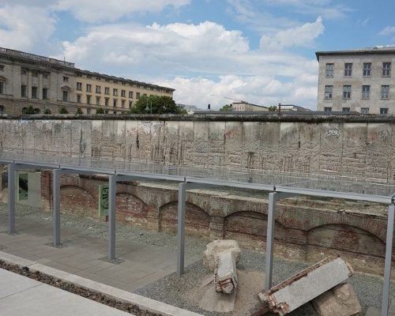
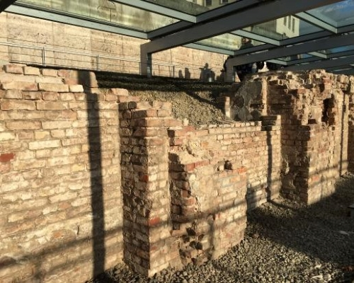
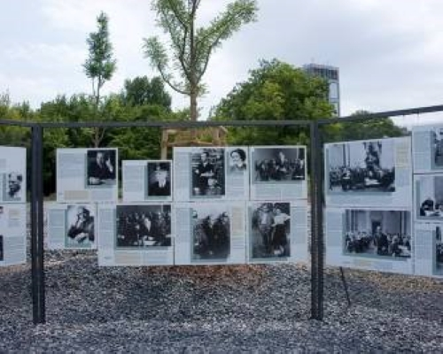
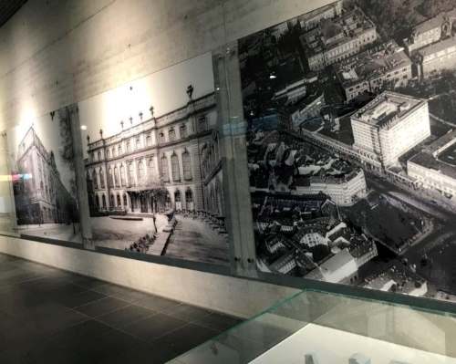

테러의 토포그래피 박물관
Topography of Terror
- 
- 
- 
- 
주소
정보
꿀팁
소장품
교통
운영 시간
입장료
Niederkirchnerstrasse 8, 10963 Berlin Germany, 독일
독일 베를린에 있는 야외 박물관으로 나치스 시절의
기록을 전시하고 있다.
베를린 장벽이 세워지기 전 나치 기대 대부분의 범죄를
계획하고 지도했던 장소이다.
독일 나치스 정권 시절의 참상을 기억하고 나치스의
만행을 철저히 규명하기 위한 자료들을 전시하고 있다.
나치 포로 막사와 나치 만행에 대한 역사적 사실을
알리는 교육 프로그램을 운영하고 있다.
독일어와 영어로 제공됨!
나치의 만행을 담은 사진, 역사적 기록, 신문 스크랩
지하철, 버스
현재 운영 x
매일 10:00~20:00
무료